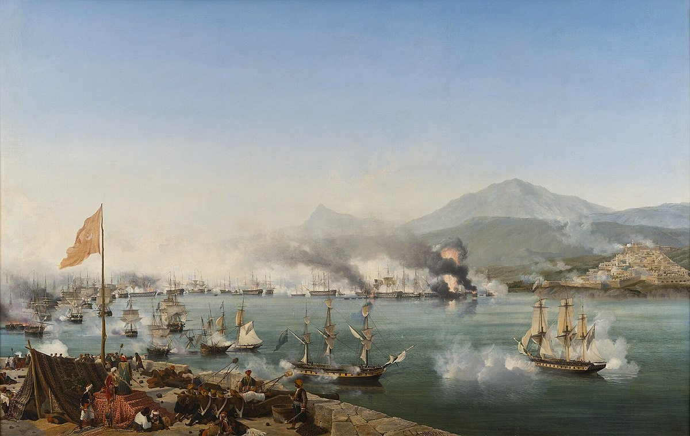
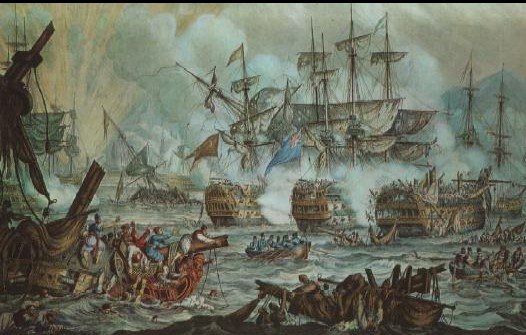
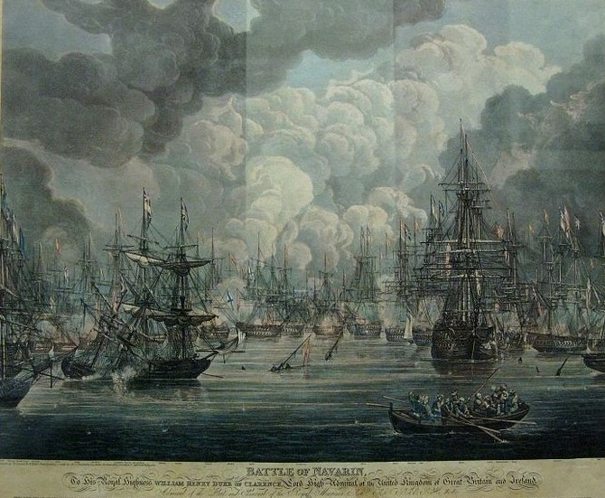

- Anasayfa
- Türk Korsanlarımız
- Yabancı Korsanlar
- Korsan Deniz Savaşları
Savaş Derecesi:
Navarin Savaşı (Fâciası)
")
20 Ekim 1827 tarihinde, Fransa, İngiltere ve Rusya müttefik filolarının, Navarin’deki Osmanlı-Mısır donanmasına baskını.
On dokuzuncu yüzyılda İslâm âleminin en büyük, dünyanın ise büyük güçlerinden olan Osmanlı Devleti'nin varlığı, Hıristiyan ve sömürgeci devletleri rahatsız ediyordu. Sömürgeci devletlerin dünya hakimiyetine; sultanları, aynı zamanda İslâm âleminin lideri demek olan halifelik sıfatına da sahip Osmanlı Devleti, engel oluyordu. Osmanlı Devletini bölüp, parçalayıp, yıkmak için, tebaadan olan Rumları; Türklere karşı kışkırtıyorlardı. Rumların yaptıkları vahşetleri, sanki Osmanlılar yapmış gibi propaganda yaparak lehlerinde kamuoyu meydana getirdiler. Bütün Hıristiyan ahaliye olduğu gibi, Yunanistan’daki Rumlara da, kavmiyetçilik ideolojisiyle isyan fikrini aşıladılar.

Masonik esaslara ve şifrelere göre teşkilâtlanan ve faaliyetlerini arttıran fesat cemiyetleri, Avrupa’da ve Rusya’da bulunan Rum sermâyedarlar tarafından destekleniyordu. Neticede, Osmanlı İmparatorluğu yerine Bizans'ı diriltmek hayaliyle, Yunan isyanları başladı. Osmanlı Devleti, içişlerindeki gelişmeleri kontrol etmek için, Yunanistan’daki tedbirlerini arttırdı. 1821 yılında Mora’da, Rum isyanı çıktı. Devrin Osmanlı Sultanı İkinci Mahmud Han, Mora İsyanını bastırmakla Mısır Valisi Kavalalı Mehmed Ali Paşa'yı vazifelendirdi. Mehmed Ali Paşanın oğlu İbrahim Paşa; Mora’daki Rum âsileri, Rus subay ve askerleriyle, Avrupa devletlerinin gönüllü hümanistlerini mağlup edip, bölgeden attı. Bu durum Fransa, İngiltere ile Rusya’nın birlik olarak Osmanlı Devletine karşı cephe almalarına yol açtı. Mora’dan Osmanlı askerinin çekilmesini isteyen notayı, Sultan Mahmud Han, hükümranlık prensibiyle uyuşmadığı için reddetti. Zira bu durum, Osmanlıların bir iç meselesiydi.
Baltık Denizine açılan Rus donanmasından bir filo, İngilizlerle birleşip, Akdeniz’e girdi. Rus-İngiliz gemilerine Fransız filosu da katıldı. İngiliz amirali Cangrington kumandasındaki Fransa, İngiltere, Rusya müttefik donanması, Mısır’daki Kavalalı İbrahim Paşa kuvvetlerine karşı deniz harekâtı başlattı. Mora İsyanında, Osmanlı ve Mısır gemileri Navarin limanında bulunuyordu. Müttefik donanması, Navarin Limanını kuşattı. Osmanlılar ile deniz muharebesi yapmaya cesaret edemediler. Amiral Cangrington, müttefikler adına, Osmanlı ve Mısır askerlerinin Yunanistan’dan çekilmesini istedi. Kabul edilmedi. Navarin’in açıklarındaki müttefik donanması, gayelerinin savaş olmadığını ileri sürerek, limana girmek istediler. 20 Ekimde dostane bir havayla Navarin Limanına girdiler. Osmanlı ve Mısır gemileri hilâl şeklinde birbirine rampa etmiş, üç sıra hâlindeydiler. Limana giren müttefik gemileri, savaş için bahane aramaya başladılar. Ateş gemisinin başka yere alınmasını istediler. Kabul edilmeyince, Mısır gemilerinden kendilerine ateş açıldığını ileri sürerek, savaşı başlattılar. Müttefik gemilerinin âni ateşi üç saat devam etti. Elli yedi Osmanlı-Mısır gemisiyle altı bin asker kaybedildi. Müttefiklerin kaybı ise bin askerdi.

Navarin Fâciasını Osmanlı hükümeti protesto edip, Fransa, İngiltere ve Rusya’dan tazminat istedi. Avrupa basını, fâciayı örtmek için, Osmanlı Devleti aleyhine kampanya açtılar. Fransa, İngiltere, Rusya’nın elçileri, İstanbul’u terk ettiler. Faciaya Osmanlı Devletinin sebep olduğunu ileri sürüp, Rusya, Osmanlı Devletine harp ilan etti. İngiltere parlamentosundaki sert tenkitler üzerine, İngiliz Amirali Cangrington, görevinden alındı. Rusların, Balkanlardan ve Kafkaslardan saldırmaları üzerine iki cephe açıldı. Fransa, Mora’ya asker çıkardı. 1826 yılında, Yeniçeri Ocağı kaldırılıp, ordusu teşkilatlanıp kadrosunu bütünüyle tamamlayamayan Osmanlı Devleti, bütün imkânları seferber ederek, düşmanlarla mücadele etti. Fransa ve Rusya’nın Orta-Doğu ve Akdeniz’de güçlenmesini, menfaati icabı istemeyen İngiltere’nin araya girmesiyle anlaşma yapıldı.
Navarin Fâciası neticesinde; Avrupa devletleri Osmanlı Devletini rahat bırakmayarak, kısa zaman sonra Yunanistan'ın istiklâl kazanmasını sağladılar.
 - Yabancı Korsanlar